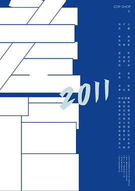
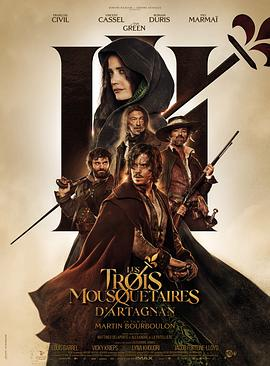
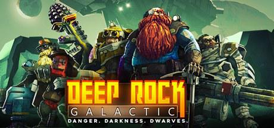
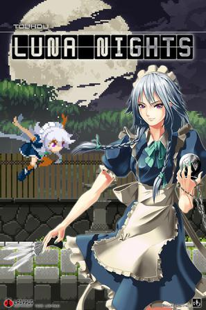
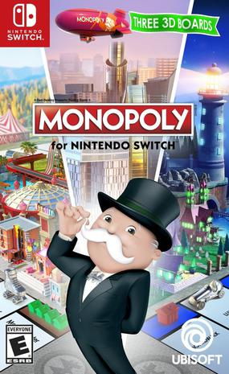

2024年6月
广播发布后不可编辑，所以每条都是那一刻的原话。
2024-06-29 20:30:42
 看过 蔚蓝档案 The Animation / ブルーアーカイブ The Animation
看过 蔚蓝档案 The Animation / ブルーアーカイブ The Animation
设定很棒，角色很棒，剧情一般甚至有点不完整，音乐不错。 //难得从小玩到大的Nexon的游戏动画化，还是要观摩下，虽然感觉有点费萌番倾向，但是配色很棒
2024-06-23 20:08:24

2024-06-23 20:07:49
想看 差馆
2024-06-23 12:33:57
看过 天龙八部之乔峰传
非原著党，作为武侠爱好者，单纯看这个电影我觉得比前面一点时间看过的龙门客栈们好很多很多。画面和角色都很专业，镜头很有美感，动作部分也很过瘾。很多细节做的也很好，比如马后面的尘土飞扬。 不知道阿朱的故事是不是原著里有的，但是给乔峰身世更蒙上了一层悲壮感。剧情部分大部分能猜得到后续，但是也有一些出乎意料的。另外，这俩弃娃的爹竟然还活着真是离谱。
2024-06-23 10:03:58
想看 铁西区第一部分：工厂
2024-06-22 22:36:44

没看过原著，只知道是很有名的原著。感觉电影很多内容都是用屏幕上的字来叙述，导致不仔细看的话很难看懂。整体感觉是个好故事，可能是原著的功劳。17世纪的法国确实有点乱，而且教会互斗。
2024-06-22 22:30:38
看过 前途海量
笑点还行，但是剧情有点老套，尤其是把整个电影归结到梦上有点掉价。
2024-06-21 16:10:09
 看过 迷宫饭 / ダンジョン飯
看过 迷宫饭 / ダンジョン飯
这就结束了，一周没看到新的一集才想起来结束了。这个动画里面的菜在现实中都是有原型的，可见烹饪是一通百通的根据食材使用相同的步骤即可烹饪出美食。动画有点意犹未尽，希望快点出第二季。两个月前去涉谷十字路口看到了迷宫饭的广告，印象里肥肠大！ //又名舌尖上的地下城，当之无愧
2024-06-20 21:26:00
小黄人4 - 小黄人宇宙集结！搞笑部分比国产喜剧还是要多一些的，所以给的评分自然要高一些。
2024-06-18 22:42:33
看过 林都奇谭
这个电影的叙事结构意外地有趣，虽然片子很短，但是每个人的视角的不同都让观众对故事有了另一层理解，总之算是很惊喜的电影。
2024-06-18 22:38:04
看过 发财日记
最近看的喜剧都是想催泪，但是剧情又是很老套，笑点还不够。这部电影也不例外，设定其实很多就不合理了，比如说大哥为啥在深圳一直对没有任何关系的二哥不离不弃、穿西装还长期露宿街头违和感也太大了、杀马特的发型正常人都弄不出来吧等等等等。总体来看公式化的结构还是比较完整的，主要还是审美疲劳了，现在的观众也不好满足。
2024-06-16 14:34:45

为了给《黑神话悟空》腾SSD空间，打开了这个 2020-05-01 标记的重制版。
2024-06-16 12:17:59

游戏全称《下班后转身成矮人继续被矿主压迫》。Steam free weekend试了一下难度一般，本身对于FPS就兴趣不大，队友还算是比较友好，不过组了一局感觉没有很戳中。反而是里面的flappy bird刷榜到了第一 =，=
2024-06-15 17:46:24

依然是2021-07-10之后再没玩过，游戏太多了，时间太少啦。 // xgpu yyds，很让人上瘾的游戏，死亡成本也不高，很适合手残党体验，东方风格+1星
2024-06-15 17:44:44

依然是自从2019-01-10评论后就再也没看过了，Forza除了好多新的了吧。 // 赛车游戏能做的这么好玩，我真的是落伍了。。之前本科的时候还在玩极品飞车9，觉得已经很好玩了，现在有了Xbox画面真是太美了，游戏性玩法也十分佛系，手残党福音
2024-06-15 17:40:21
想看 疯狂的麦克斯：狂暴女神 / Furiosa: A Mad Max Saga
2024-06-15 17:30:13

自从上次2021-11-14评论了下就再也没玩过了，联网模式也是匹配不到人的状态。// 普通难度的电脑掷色子绝对作弊了，整条街都是我的地，咋就总能跳到了抽卡的那一格。。。不过还好，依然胜利，通关条件是最高难度胜利，就这么决定了。现在没啥在线大富翁游戏啊。。
2024-06-15 17:08:20
看过 宽松世代又如何 INTERNATIONAL / ゆとりですがなにか インターナショナル
（我严重需要一个AI来帮我写影评） 总算是追完了，剧情基本保持了正篇的离谱风格，成功把接力棒传给Z世代了。
2024-06-13 16:48:07
2024-06-12 22:56:06

好像最开始还是雅思班的老师安利，一直记得有这么部动画，终于有机会补完。朴实的画风但是无限的巧思，把人从小到大的各种闹内状态具象化而且解释得合情合理。最后快乐和悲伤和平共处才成为了大人。总结下来takeaway就是小孩子的core memory一定要是快乐的，搬家对于大人来说已经很伤了、对于小孩来说更甚。片中Bing Bong是一个很神奇的存在，小时候陪伴自己、给自己创造力和勇气的角色，长大后却逐渐被遗忘了，不同阶段的人看下来会有不同的感受，这才是动画的魅力。
2024-06-11 16:12:07
想看 宽松世代又如何 INTERNATIONAL / ゆとりですがなにか インターナショナル
2024-06-11 16:11:15
还真有啊！我以为是模仿在下坂本有何贵干的
2024-06-11 16:09:50
看过 宽松世代又如何SP：纯米吟酿纯情篇 / ゆとりですがなにか こんなにうれしいことはない
番外比正片好看！看到6代老酒厂保留下来了甚是欣慰。另外清野菜名也来了，大哥大快集齐了吧
2024-06-11 16:06:17
看来我们下一代是中国的宽松世代啊（每个人肯定会有不同理解）🫠 感觉教育难度会很大。相比于日本，80、90后绝对算是前宽松世代了，从小是打击教育，长大依然是一路受打击，当然比起同龄的别国宽松世代我们确实更占优势一些。虽然国内有些往躺平世代跃迁的趋势，但是感觉之后还是会回到宽松世代。就是，剧里的感情线有点太乱了吧，各种出轨🫠
2024-06-08 09:23:36
看过 新龙门客栈之英雄觉醒
违和感很浓的电影，不管是选角、画面、剪辑还是剧情设定。不推荐。
2024-06-07 21:29:39
想看 重启人生 番外篇 / ブラッシュアップライフ アナザーストーリー
2024-06-05 11:19:17
看过 没有一顿火锅解决不了的事
剧情有够无厘头，但是是那种不吸引人的无厘头。很多设定前后都不连贯，总觉得逻辑不够合理。总之不推荐。